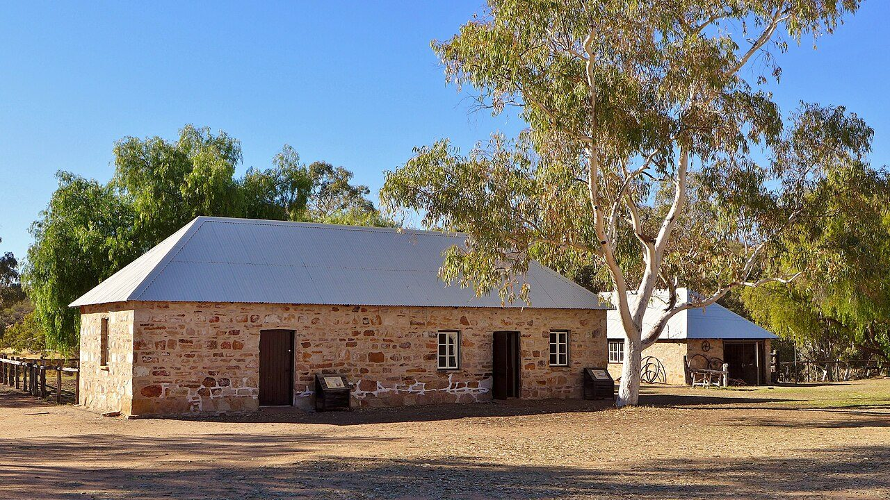
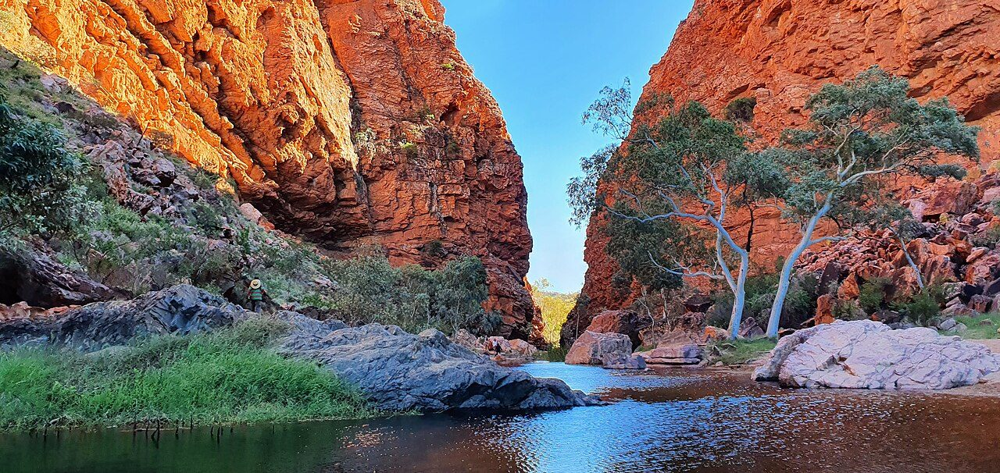
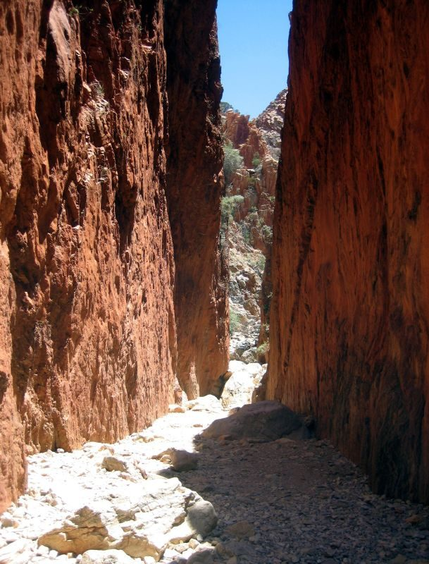
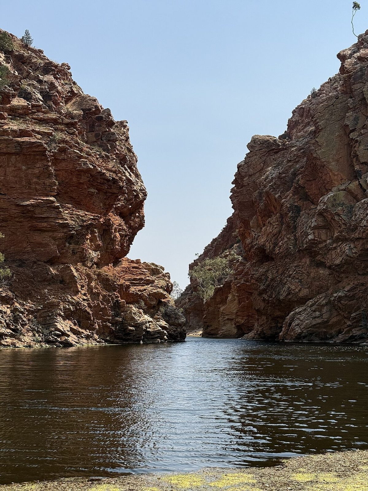
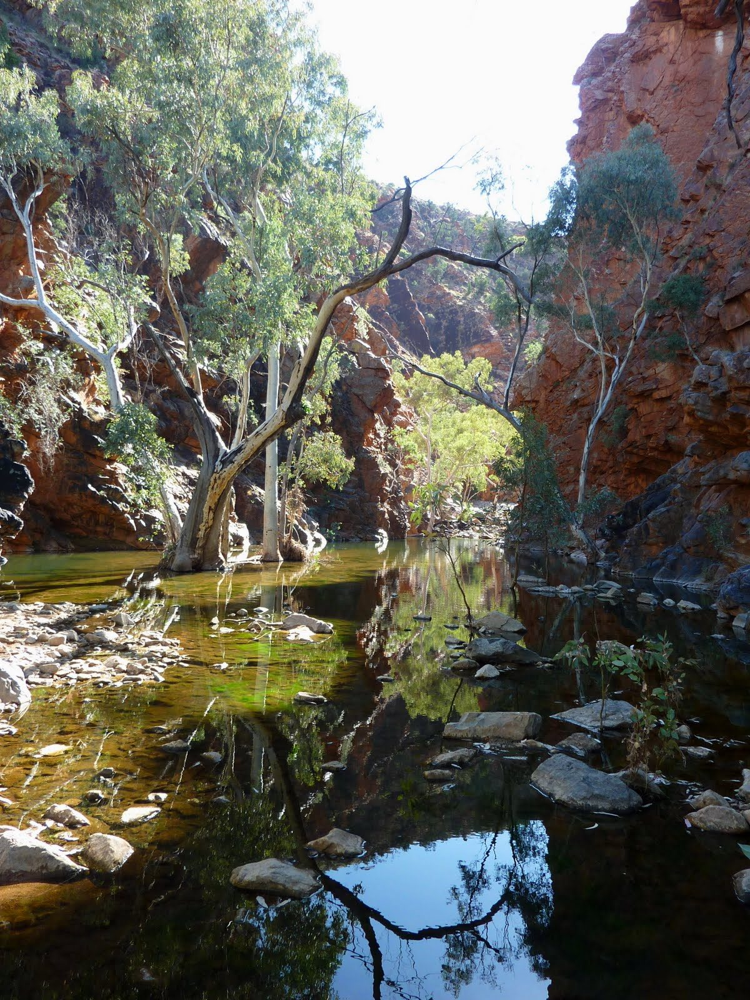
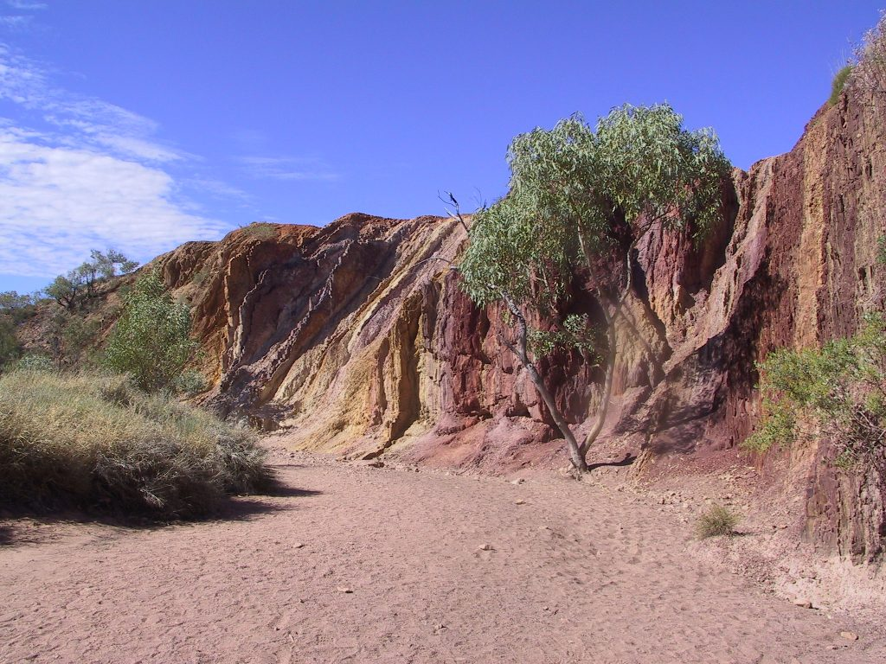
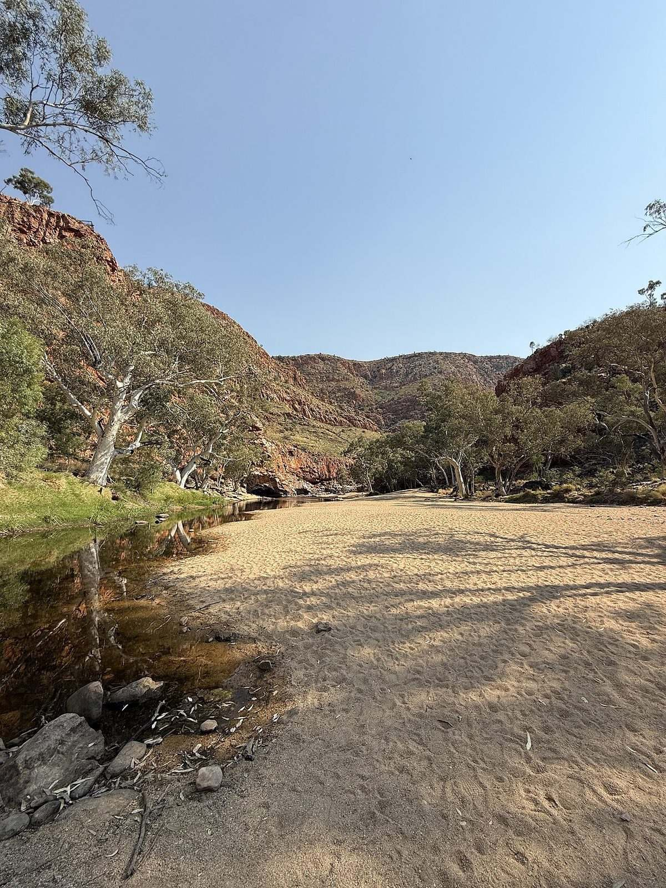
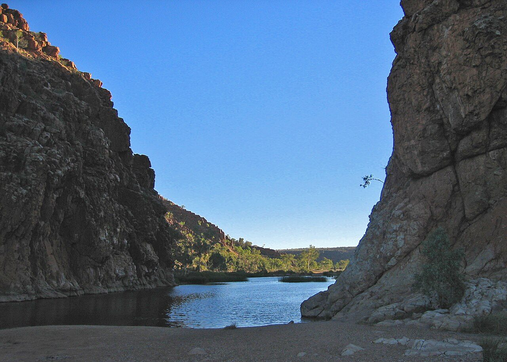
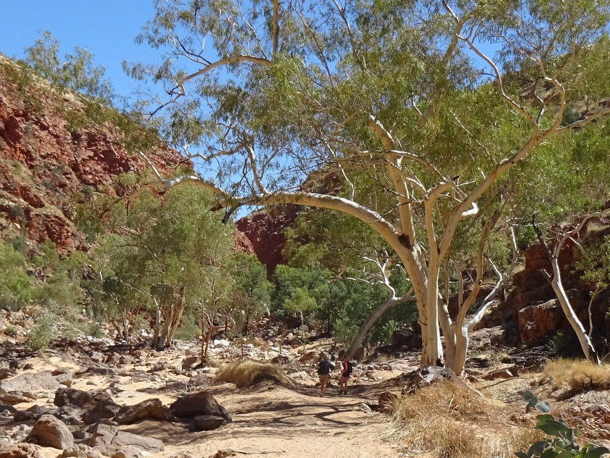
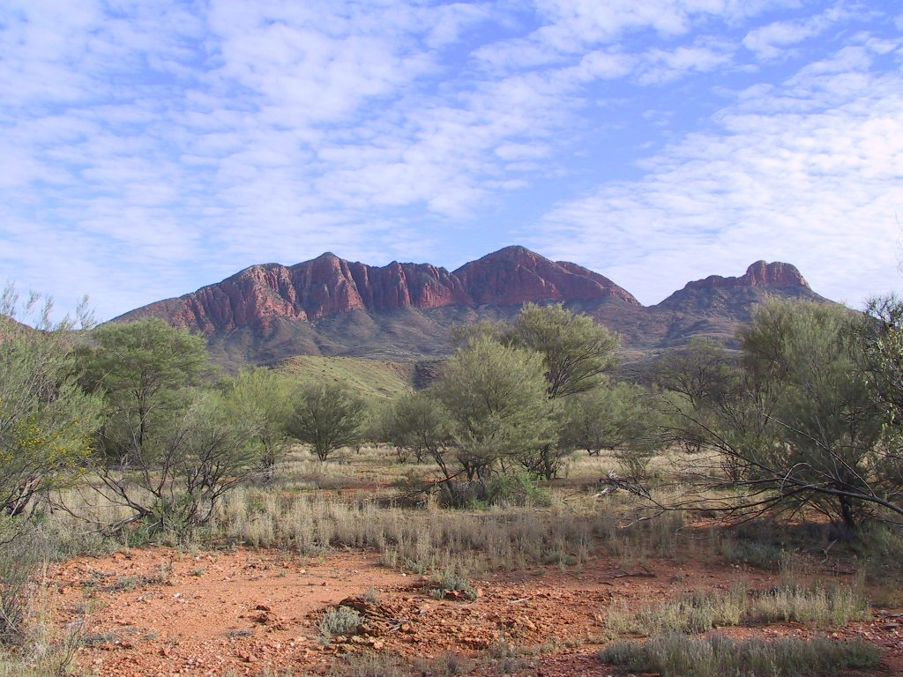

Larapinta Trail
Desert ridges and waterholes across Arrernte country to Mount Sonder.
223 km through Australia, ending at Mount Sonder. You begin at Old Telegraph Station. Watch Walks moves you along it with the steps you already take, so it's about 9 weeks at 5,000 steps a day. Here are its 14 landmarks, in the order you meet them, photographed and written up.
- 223km end to end
- 14landmarks
- 9 weeksat 5,000 steps a day
- Mount Sonderfinishes at

The landmarks of Larapinta Trail
14 landmarks, in walking order. Each photograph is by the person credited beneath it, used as they licensed it.
-

Photo: Bahnfrend · Wikimedia Commons, CC BY-SA 4.0 Old Telegraph Station
Stone buildings sit low beside the Todd River, gathered around the original Alice Spring that gave the town its name. Built in 1872 on the Overland Telegraph Line, this was once the outback's only link to the world. Here the Larapinta begins. Two hundred and twenty-three kilometres of the West MacDonnell Ranges, Tjoritja on Arrernte country, wait to the west.
-

Photo: Teckez · Wikimedia Commons, CC BY-SA 4.0 Simpsons Gap
A cleft in the quartzite where Roe Creek breaks through the range, Simpsons Gap holds a waterhole that rarely dries. The Arrernte know it as Rungutjirpa. Black-footed rock-wallabies freeze on the scree at dusk, hard to pick from the stone. Ghost gums lean white against the red rock, the first of many gaps along the range.
-
Jay Creek
Sand underfoot and the shade of river red gums mark Jay Creek, where the trail's second section ends. Water sits just below the surface here, drawn up by roots that hold this dry country together. Spinifex covers the slopes in stiff green cushions. The range runs on ahead, a long red wall closing off the southern sky.
-

Photo: Prince Roy · Wikipedia, CC BY-SA 3.0 Standley Chasm (Angkerle Atwatye)
At noon the sun drops straight into Angkerle Atwatye and the walls blaze orange, eighty metres of sheer quartzite barely a few metres apart. Standley Chasm is Arrernte land, cared for by the Iwupataka community who run the kiosk at its mouth. Cycads cling to the ledges, relics of a wetter age. The light holds only briefly before the walls fall back into shadow.
-
Birthday Waterhole
The Hugh River pools here in the shade of the range, a quiet camp beyond the high crossing of Brinkley Bluff. Birthday Waterhole sits where the trail meets water again after the long ridge. Corellas screech in the gums at first light. Ahead the river cuts north into Hugh Gorge, where the walls close in and the going turns to boulders.
-
Hugh Gorge
Boulders the size of cars choke the floor of Hugh Gorge, where a line must be picked between them beneath walls rising sheer overhead. Water lingers in shaded pools long into the dry. One of the trail's wildest stretches, it cuts deep into the Chewings Range. Zebra finches drink at the edges, and the rock glows wherever the sun finds it.
-

Photo: DaHuzyBru · Wikimedia Commons, CC BY-SA 4.0 Ellery Creek Big Hole
Cold, deep and dark, the waterhole at Ellery Creek fills a gap the creek has carved through folded rock. The Arrernte call it Udepata, a meeting place of great significance on the fish and honey-ant dreaming trails. Layers of quartzite stand on end in the cliffs, bent by forces older than memory. The water stays bracingly cold through the hottest months.
-

Photo: Christopher Watson (http://www.comebirdwatching.blogspot.com/) · Wikimedia Commons, CC BY-SA 3.0 Serpentine Gorge
Serpentine Gorge hides its waterhole behind a narrow entrance, sealed off by the twist of rock that gives the gorge its name. From the lookout above, the range unrolls east and west in parallel red ridges. Cycads grow in the shaded cleft below. The pool is a refuge for old plants and older water, left undisturbed on Arrernte country.
-
Serpentine Chalet Dam
Crumbling concrete and a low stone wall are all that remain of the Serpentine Chalet, a tourist venture that failed in the 1960s in country too harsh to tame. Even its dam leaked, the rock beneath too porous to hold water. Mulga scrub has reclaimed the site, now a quiet bush camp. Wild ambition rusts slowly in the West MacDonnells.
-

Photo: No machine-readable author provided. Felix Dance assumed (ba · Wikipedia, CC BY-SA 3.0 The Ochre Pits
Bands of red, yellow and white streak the cutbank of a dry creek, ochre quarried by Western Arrernte people for ceremony, medicine and trade. It remains a living cultural site, protected so the stone stays where it lies. The colours come from iron in the rock, brightening where the sun strikes them. Ormiston lies a long day's walk further west.
-

Photo: DaHuzyBru · Wikimedia Commons, CC BY-SA 4.0 Ormiston Gorge
Many walkers rate Ormiston the finest gorge on the trail. Red walls climb hundreds of metres above a near-permanent waterhole, and the Pound opens behind them into a hidden basin ringed by peaks. Kwartatuma, in Arrernte. Ghost gums flare white on the ledges while rock-wallabies watch from the scree above the cold, deep pool.
-

Photo: Albinfo · Wikimedia Commons, Public domain Glen Helen
The Finke River cuts through the range at Glen Helen, its bed among the oldest watercourses on Earth. Larapinta is the Arrernte name for this river, and the trail carries it west. Red cliffs drop straight into a long, still waterhole. The road reaches its end here, with the last gorges and the summit climb still ahead. Mount Sonder shows on the skyline.
-

Photo: Iancochrane · Flickr via Openverse, CC BY 2.0 Redbank Gorge
A slot barely wide enough to swim, Redbank Gorge holds water so cold and so shaded it can chill a body within minutes. The red walls lean close overhead. This is the last camp, pitched at the foot of Rwetyepme. Hikers wake in the dark, packs half-loaded by the tent, for the summit push begins before dawn.
-

Photo: Felix Dance · Wikipedia, CC BY-SA 3.0 Mount Sonder (Rwetyepme)
Rwetyepme rises to 1,380 metres, and its summit is the classic sunrise finish of the Larapinta. At dawn the desert falls away on every side, ridge after ancient ridge glowing red as the sun clears the horizon. Mount Sonder, the walkers call it. Two hundred and twenty-three kilometres of Tjoritja end on this cold, wind-scoured crest, where the whole country wakes to the light.
Walking the Larapinta Trail
Your watch is already counting these steps. Watch Walks spends them on the Larapinta Trail, all 223 km of it, and hands you each landmark as you reach it. There's no route recording, no account and no ads. The Inca Trail is free; this one is a one-time purchase with no subscription.
Other trails in Oceania
- Te Araroa 3,000 km · New Zealand
- Bibbulmun Track 1,000 km · Australia
- Australian Alps Walking Track 655 km · Australia (VIC/NSW/ACT)
- Cape to Cape Track 123 km · Australia (WA)
- Routeburn Track 32 km · New Zealand
- Overland Track 65 km · Australia (Tasmania)